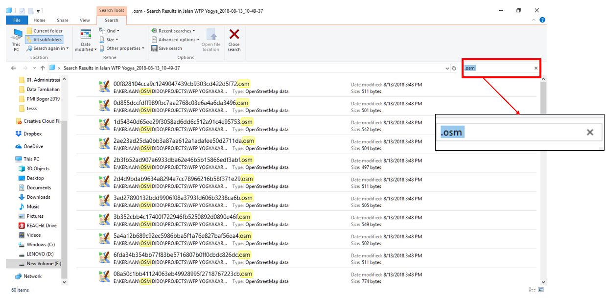
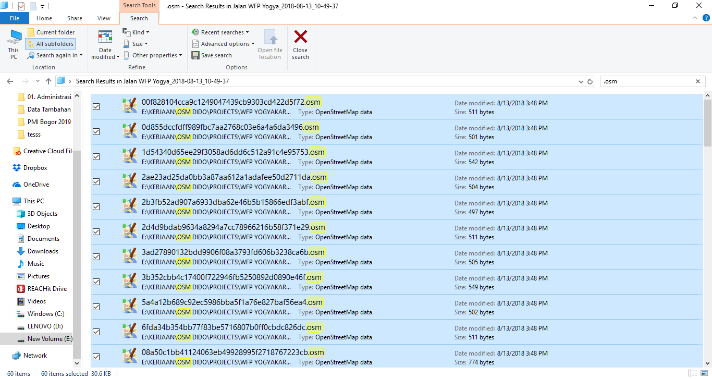
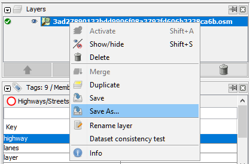
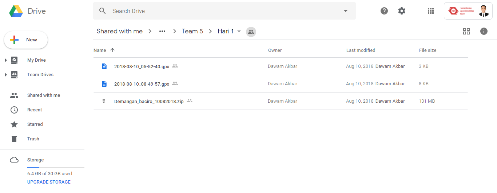
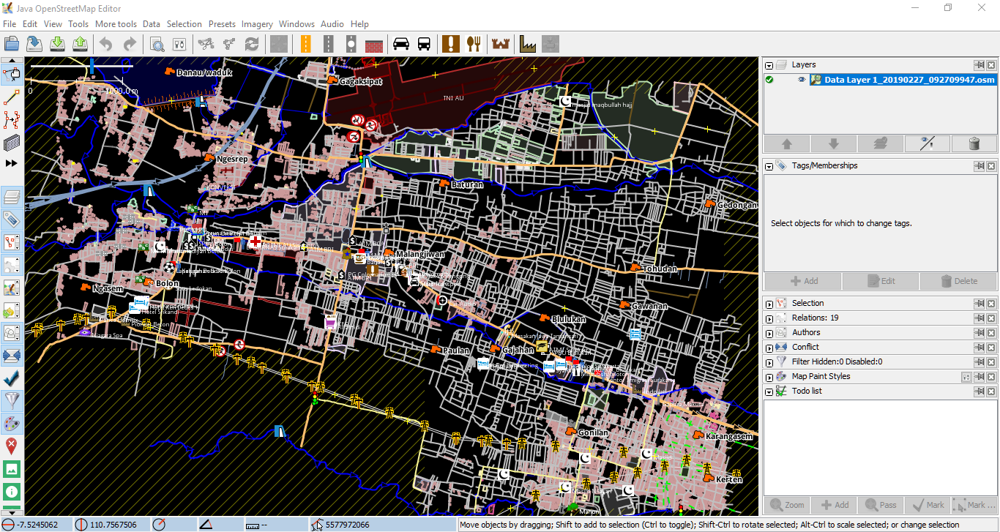
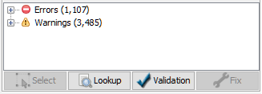
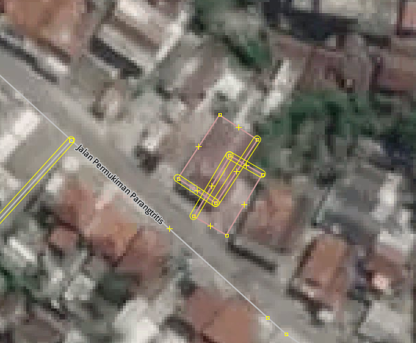
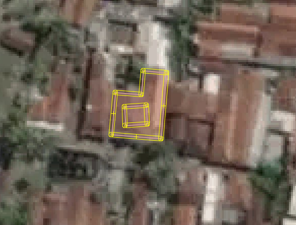

JOSM for Validating Survey Data
Download page as PDFObjectives:
- To do initial checking on field survey data using JOSM
- To do a quality assurance on field survey data using JOSM
- To understand the type of error and warning on JOSM
JOSM is a software that has a function to do mapping and editing in OpenStreetMap. Why JOSM? Because JOSM has many functions to support your mapping and editing in OpenStreetMap. One of the features is its capability of doing data validation. Data validation is an important thing to do to maintain the quality of OpenStreetMap data.
I. How to do Data Validation on Field Survey Data
In field survey, there are two different types of data needed to be collected, infrastructures and administrative boundary. Before input the data on JOSM, those data needed to be checked by the Quality Assurance to make sure the attribute information is suitable with the OpenStreetMap Data Model. Quality Assurance also need to check whether the surveyor was managed to get all the object or not in the field survey area.
- Checking Field Survey Data using Administrative Boundary
You need to check the field survey data using administrative boundary to see whether the surveyor was managed to get all the object or not in certain administrative area. You can use administrative boundary data from BPS (Central Bureau of Statistics) or using the administrative boundary created by the Quality Assurance.
Open the field survey data you have collected. For example, in this module we will using field survey data from Yogyakarta.

Data example from Wedomartani Village, Sleman, Yogyakarta
After that, please open the administrative boundary you have. In this example, we will using the village boundary from BPS. This data still in the .shp data format, so you need to convert the data into GeoJSON file format if you want to open it using JOSM. If you want to see more information about using GeoJSON data format, you can read that on Using GeoJSON module.
To open administrative boundary file, select File → Open, then insert your selected administrative boundary.

- You can compare between your object distribution and the administrative boundary. If you see there is still some areas needed to be checked and there is still some objects need to be collected, you can ask the surveyor for doing survey again on that area.
- You can compare between your object distribution and the administrative boundary. If you see there is still some areas needed to be checked and there is still some objects need to be collected, you can ask the surveyor for doing survey again on that area.
Checking Boundary Administrative from Field Survey
Data entry using survey map to collect and draw the boundary administrative based on information collected from sub-village staff. You can check how many RW boundaries collected and you can check whether the boundary is clear or not.
Combine field survey data into one single file
You need to combine all ODK Collect file into one single same file. To combine it, please follow these steps below:
- Once you copied the ODK file from your smartphone into your laptop/computer, then you can search your ODK Collect file using Windows Explorer. If you forget how to copy your ODK file, you can read it on Using ODK Collect. For example, in this module we using field survey data from Yogyakarta area.

ODK Collect Data copied in laptop/computer
- After that, look over the search box on the top right side of your screen, then type ‘.osm’. You need to do this so the windows will help you to identify which ODK data has an ‘.osm’ data format.

Searching files with ‘.osm’ data format
- Select all the data using Ctrl+A.

All files has been selected
- Then, click and hold on one file, then drag it into your JOSM. Make sure you already opened the JOSM before performing this action.
Drag and open the .osm file on JOSM
- If it succeed then you will see like this

All .osm file opened on JOSM
- You can see that your data is currently separated on the different layers. Then, you need to combine it into one single layer file. To combine it, click one of the ODK data in the layer window, then press Ctrl+A to select all the objects, then right click and select Merge.

Combine all different layers into one single layer
- There will be an option for you to define the target layer. You don’t need to change this section and continue to press Merge.

Choose merge to combine all the data
- After that you will see only one merged layer.

Merged layer
You can save your data by doing right click on the merged layer, then press Save as and you can name it as you like.

Upload your Field Survey Data on Google Drive
After you combine all the data, you need to upload the data into a cloud-sharing-storage platform where all the team members, whether Data Entry or Quality Assurance, can access all the data. You can use a free cloud-sharing-storage like Google Drive.

II. Checking Field Survey Data Input
After doing a data validation on your raw data, then you need to do a validation on the OpenStreetMap data in server. You can do this validation using a plugin in JOSM called to do list and validation tool.
Using to do list plugin
You can use to do list to do a validation on your data. To do list allows you to make a list of the objects you have collected on your survey. With this list, it will be easier to do a data checking on by one, so there will be no data missed. Please read Using to-do list in JOSM if you need to.
For example, you have a set of data like this:

Example of survey data
Those data collected by using ODK Collect and Open Map Kit (OMK). We need to check whether this data correct or not. Therefore, you need to download existing OSM data to check whether this data already mapped or not. After that, you can do some validation on your data, like spell checking or node placing. With this huge data set, it will be much easier if we use to do list plugin.
For example, you have an object called Port’s Health Office located in North Jakarta. Therefore, you need to download existing OSM data to do some validation. With these data, you can do a comparison between existing data and field survey data, like spell checking or if there is a wrong information on the existing data. On the example data, you can see that the field survey data object’s name written in lowercase. In fact, we want that the object’s name written with capital letter on each word. As you can see, on the existing OSM data, the object already written with capital on each word. It means that the data entry done their job very well.
Comparison between raw data and existing data attribute on OSM
On the other hand, you can also check the placement for each object. On the picture above, you can see that raw data (node with grey color) not located on the exact location where it should be placed, meanwhile on the existing data, the object is already placed on the exact location (colored node). You can use satellite imagery to help you determine where the node should be placed.
Node placement difference between raw data and existing OSM data
Using Validation Tool
- Download OpenStreetMap data on your selected location

Downloaded OpenStreetMap data
- Validate the data using validation tools on JOSM. for To activate the validation result, select Window then Validation Result. The validation window will shows up on the right bottom side of your JOSM screen.

Activating validation window on JOSM
- Click Validation on validation result window to start your validation. One thing you need to remember, please make sure you are not selecting any object in JOSM when you want to validate your data. If you doing this, JOSM will only validate your currently selected object.

Validation result using JOSM
- You need to fix the data when you find an error and warning on your validation result. After that, don’t forget to upload your data into OpenStreetMap server.
III. Definition of Error and Warning on JOSM
As mentioned before, when you’re doing a validation using JOSM, you will find two kinds of validation results:
Error
When you find an error on your validation result, you need to fix this as soon as possible. Error means that there are some objects on your data set that violate the regulation of OpenStreetMap mapping regulation. You will not be able to upload your data if you’re not finishing the error on your data set/changeset.
Warning
Quite different from error, you don’t need to fix the warning when you find it on your validation result. Same with the name, warning give you information that there are some things that needed to be repaired on your data. You can ignore this warning and continue to upload the data. Nevertheless, there are few kinds of warning you need to remember and you should need to fix this mistake. You will learn about it on the next chapter.

Error and warning when doing a validation
You can automatically repair the error data using Fix button. For warning type, you need to repair that one by one or manually.

You can automatically repair errors using Fix button
IV. List of Error and Warning needed to be Repair
There are many kinds of error and warning when you doing validation on OpenStreetMap. You can use tool available on JOSM (Using JOSM module) to fix and repair all error and warning. You don’t need to remember all kinds of error and warning that possibly shows up when doing validation. But, you still need to know which kind of error and warning commonly shows and which one you need to repair, like:
a. Error
- Duplicated Node
This type of error commonly show up when an object accidentally uploaded twice in the same time. It will cause two or more objects will overlap each other on the same location. This mostly happen when you upload the data using a bad and unstable internet connection.

Error: Duplicated Node
- Duplicated Ways
This kind of error is similar with duplicated node, where there are two or more ways/line located on the same location/overlap. This error mostly happen for highway object, but this would likely found on same overlapping building.

Error: Duplicated ways
b. Warning
- Crossing Building
This warning is one of the most commonly found when doing a validation. Mostly OpenStreetMap user draw different building as an overlapping object. To fix this warning, you just need to move or delete one of the overlapping building.

Warning: Crossing building
- Crossing Ways
This warning will come up when there are two line or highway object without an intersection node between those line or highway. To fix this warning, you just need to add an intersection node between those line/highway.

Warning: Crossing ways
- Overlapping Highways
This warning will show up when there is an overlapping highway located on the same location. To fix this warning, you just need to move or delete the overlapping highways.

Warning: Overlapping highways
- Node connect highways and building
This warning will show up when node from building object and node from highway object accidentally connected to each other. To fix this problem, you can separate the connected node using unglue node.

Warning: Node connect highways and building
- Untagged ways
When there is an object drawn in JOSM but don’t have any information, JOSM will flagged that object as unidentified object or as untagged ways. This notification is important because when you mapping using JOSM, you need to give the information to your object. If you doing this mistake, your object will not come up on OpenStreetMap website so make sure don’t forget to add information/tag on your object.

Warning:Untagged ways
- Way end node near other highways
This warning came up when there are two highways located very close to each other but each node not connected. This object will be identified as an end of the road or it means that the road is impassable. If it say so, please add tag highway=block on the object’s information. But, if the highway was supposed to be connected, you can combine them using Merge.
Warning: Way end node near other highways
- Building inside building
This is one of the most commonly found when doing validation. This mistake happen when there is a building polygon drawn inside another polygon. To finish this, you can move or delete the building inside another building.

Warning: Building inside building
- Unnamed ways
Unnamed ways shows there is a highway which don’t have name on it. Basically, you can ignore this warning because mostly all mapper do their mapping remotely, so they don’t know the name of the street.

Warning: Unnamed ways
- Similarly named ways
This warning will show up when there is a similar name on different highway. For example, there is a road called Jalan Tebet Timur I, Jalan Tebet Timur IA, Jalan Tebet Timur IAA, and else. You can ignore this warning if you sure the name is similar.

Warning: Similarly named ways
SUMMARY
OpenStreetMap as an open source platform causing its data become so vulnerable with data vandalism. Therefore, it is very important to keep the data quality by doing validation. From now on, you have managed to learn about data validation using validation tool on JOSM. You have also learned about error and warning and how to resolve the problem when you doing validation. Hopefully you can understand how important it is to keep the data quality of OpenStreetMap.